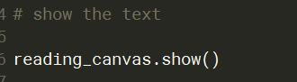

Single sentence reading experiment
Single sentence reading experiment
Elements:
Trial sequence: Drift > Visual Presentation
Drift correction
Where the first word appears
Visual Presentation
Visual presentation.
- Time window of interest is from start to end (so no triggers in between).
- cf. gaze-contingent paradigms.
Visual Presentation
Visual presentation: Areas of Interest

Areas of Interest
- Target region but also
- Pre-critical region
- Spillover region
Research question.
- Single words v phrases v clauses …
Areas of Interest
- Never beginning/end of the line.
- 1st and last fixations on a line are 5-7 ls from the edges.
- 1st word likely to be skipped.
- 1st fix longer, last fix shorter.
- AI never clause-final.
Task
- Move to the next trial
- Comprehension (every now and then/every trial)
Confounds
- Characteristics of the visual presentation (non-linguistic).
- Characteristics of the materials (linguistic)
- Characteristics of the human visual system
Non-linguistic confounds
Text layout:
- Font style and size
- B&W for dyslexic participants is not good.
- Horizontal space.
- 14-18 pt
- Monospace font (e.g., Courier)
Non-linguistic confounds
- Line spacing
- Less accuracy for vertical movements
- Double/triple spacing.
- Line breaks
- Margins
- Accuracy is low at screen borders.
Linguistic confounds
Same we have discussed in previous weeks (see Clifton et al., 2016):
- The Big Three (Frequency, Length, Predictability)
- Lexical ambiguity
- Orthographic neighbourhood size (differ by 1 letter)
- Prevalence
- Inter alia
HVS confounds
Foveal versus parafoveal processing.
Sequential nature of reading.
How information from one area can influence eye movements on the other.
- Predictability, length, etc.
- Parafoveal-on-foveal effects (see Hyönä, 2011).
- Serial versus parallel processing.
- Preview benefit, spillover effects.
Spillover: Effects of processing N are seen on N + 1, + 2.
Preview: Effects of perceiving N on N - 1.
Exercise
Howard et al. (2017)
- How did they define the Areas of Interest?
- What factors should be considered for the antecedent? (i.e., hammer/plunger in the example)
- What information do you need from procedure and apparatus to replicate this study?
Exercise
- How did they define the Areas of Interest?
7 AIs, two regions of interest.

Exercise
- What factors should be considered for the antecedent?
- Typicality (IV)
- No matching!

Exercise
- What information do you need from procedure and apparatus to replicate this study?


Analysis
More on W9 & W11 but:
- Multiple dependent variables (stages of processing).
- Type I error
- Tables!
Uses
- Word recognition
- Frequency effect, Rayner & Duffy (1986)
- Syntactic processing
- Structural ambiguities, Frazier & Rayner (1982)
- Semantic integration
- Plausibility effect, Staub et al. (2007)
- Predictive processing (Frisson et al., 2017)
- Parafoveal processing (Juhasz et al., 2009)
- Text comprehension (Dirix et al., 2019)
- Multiword units (Carrol et al., 2016)
Uses
- L2 speakers
- Gender agreement, Keating (2009)
- Children (Blythe et al., 2011)
- Older adults (Solan et al., 1995)
- Clinical populations
- Children with dyslexia, Hyönä et al. (1995)
- Adults with ASD, Howard et al. (2017)
Pros & cons
Pros
- Naturalistic reading.
- Non-invasive method.
- Different stages of processing.
- Combination with offline measures.
Cons
- Literacy required.
- Dependent variables.
- Resources.
Building an eye-tracking experiment
We are going to code a reading eye-tracking experiment on OS.
- Many of the things we learnt yesterday can be used today!
- Especially, we will use the same eye-tracking plugins
Building a reading experiment
Example: high/low frequency words (Rayner & Duffy,1986))
- DV: Fixations on an area of interest
- IV: Word frequency
5 areas of interest
Building a reading experiment
The constraints of design:
- We want to counterbalance particants across lists
- We want participants to progress in the experiment by pressing the spacebar
- We want to show participants the instructions at the beginning of the experiment
Building a reading experiment
The constraints of the eye tracker:
- We want five areas of interest
- We want a drift correction at the beginning of every trial
- Drift should appear where the sentence starts
Building a reading experiment
The loop
- Each row: a trial
- What does the first row represent?

Building a reading experiment
The trial sequence
Building a reading experiment
Send backdrop to .edf (before trial sequence)
Building a reading experiment
Send backdrop to .edf (before trial sequence)
Building a reading experiment
Send backdrop to .edf (before trial sequence)
Building a reading experiment
Drift correction
Building a reading experiment
Present stimuli and sending areas of interest done via inline python script
The prepare tab
Building a reading experiment
Present stimuli: text drawn on an area of interest basis
- Get where one area ends so the next one starts there
The run tab
Building a reading experiment
Calculate the edges of the areas of interest
The run tab
Building a reading experiment
Present the text
The run tab
Building a reading experiment
Record the areas of interest
The run tab
Building a reading experiment
Take a screenshot of the screen + send it to the tracker
The run tab
Building a reading experiment
Your turn now!
- Try:
- This example.
- A mock experiment
- Your own research question
References
Blythe, H. I., Häikiö, T., Bertam, R., Liversedge, S. P., & Hyönä, J. (2011). Reading disappearing text: Why do children refixate words? Vision Research, 51(1), 84–92. https://doi.org/10.1016/j.visres.2010.10.003
Boland, J. E. (2004). Linking eye movements to sentence comprehension in reading and listening. The on-line study of sentence comprehension: Eyetracking, ERP, and beyond, 51-76.
Brysbaert, M. (2019). How many words do we read per minute? A review and meta-analysis of reading rate. Journal of Memory and Language, 109, 104047. https://doi.org/10.1016/j.jml.2019.104047
Carrol, G., Conklin, K., & Gyllstad, H. (2016). FOUND IN TRANSLATION: The Influence of the L1 on the Reading of Idioms in a L2. Studies in Second Language Acquisition, 38(3), 403–443. https://doi.org/10.1017/S0272263115000492
Carroll, T. (2017). Eye Behavior While Reading Words of Sanskrit and Urdu Origin in Hindi. Brigham Young University.
Clifton, C., Staub, A., & Rayner, K. (2007). Eye movements in reading words and sentences. Eye movements, 341-371.
References
Clifton, C., Ferreira, F., Henderson, J. M., Inhoff, A. W., Liversedge, S. P., Reichle, E. D., & Schotter, E. R. (2016). Eye movements in reading and information processing: Keith Rayner’s 40year legacy. Journal of Memory and Language, 86, 1–19. https://doi.org/10.1016/j.jml.2015.07.004
Conklin, K., Pellicer-Sánchez, A., & Carrol, G. (2018). Eye-Tracking: A Guide for Applied Linguistics Research. Cambridge University Press. https://doi.org/10.1017/9781108233279
Cop, U., Dirix, N., Drieghe, D., & Duyck, W. (2017). Presenting GECO: An eyetracking corpus of monolingual and bilingual sentence reading. Behavior Research Methods, 49(2), 602–615. https://doi.org/10.3758/s13428-016-0734-0
Dirix, N., Vander Beken, H., De Bruyne, E., Brysbaert, M., & Duyck, W. (2019). Reading Text When Studying in a Second Language: An Eye-Tracking Study. Reading Research Quarterly, 55(3), 371–397. https://doi.org/10.1002/rrq.277
Drieghe, D. (2011). Parafoveal-on-foveal effects on eye movements during reading. In S. P. Liversedge, I. Gilchrist, & S. Everling (Eds.), The Oxford handbook of eye movements (pp. 840–855). Oxford: Oxford University Press.
References
Frazier, L., & Rayner, K. (1982). Making and correcting errors during sentence comprehension: Eye movements in the analysis of structurally ambiguous sentences. Cognitive Psychology, 14(2), 178–210. https://doi.org/10.1016/0010-0285(82)90008-1
Frisson, S., Harvey, D. R., & Staub, A. (2017). No prediction error cost in reading: Evidence from eye movements. Journal of Memory and Language, 95, 200–214. https://doi.org/10.1016/j.jml.2017.04.007
Hyönä, J. (2011). Foveal and parafoveal processing during reading. In S. P. Liversedge, I. Gilchrist, & S. Everling (Eds.), The Oxford handbook of eye movements (pp. 820–838). Oxford: Oxford University Press.
Hyönä, J., Olson, R., Defries, J., Fulker, D., Pennington, B., & Smith, S. (1995). Eye Fixation Patterns Among Dyslexic and Normal Readers: Effects of Word Length and Word Frequency. Journal of Experimental Psychology: Learning, Memory, and Cognition, 21, 1430–1440. https://doi.org/10.1037/0278-7393.21.6.1430
Howard, P. L., Liversedge, S. P., & Benson, V. (2017). Processing of co-reference in autism spectrum disorder. Autism Research, 10(12), 1968–1980. https://doi.org/10.1002/aur.1845
Juhasz, B. J., Pollatsek, A., Hyönä, J., Drieghe, D., & Rayner, K. (2009). Parafoveal processing within and between words. Quarterly Journal of Experimental Psychology, 62(7), 1356–1376. https://doi.org/10.1080/17470210802400010
References
Just, M. A., & Carpenter, P. A. (1980). A theory of reading: from eye fixations to comprehension. Psychological review, 87(4), 329.
Keating, G. D. (2009). Sensitivity to Violations of Gender Agreement in Native and Nonnative Spanish: An Eye-Movement Investigation. Language Learning, 59(3), 503–535. https://doi.org/10.1111/j.1467-9922.2009.00516.x
Liversedge, S. P., Rayner, K., White, S. J., Vergilino-Perez, D., Findlay, J. M., & Kentridge, R. W. (2004). Eye movements when reading disappearing text: is there a gap effect in reading?. Vision research, 44(10), 1013-1024.
McConkie, G. W., & Rayner, K. (1975). The span of the effective stimulus during a fixation in reading. Perception & Psychophysics, 17, 578–586.
Mitchell, D. C., Shen, X., Green, M. J., & Hodgson, T. L. (2008). Accounting for regressive eye-movements in models of sentence processing: A reappraisal of the Selective Reanalysis hypothesis. Journal of Memory and Language, 59(3), 266-293.
Pellicer-Sánchez, A. (2016). INCIDENTAL L2 VOCABULARY ACQUISITION FROM AND WHILE READING: An Eye-Tracking Study. Studies in Second Language Acquisition, 38(1), 97–130. https://doi.org/10.1017/S0272263115000224
References
Pickering, M. J., Frisson, S., McElree, B., & Traxler, M. J. (2004). Eye Movements and Semantic Composition. In M. Carreiras & C. Clifton Jr. (Eds.), The On-line Study of Sentence Comprehension. Psychology Press.
Rayner, K. (1975). The perceptual span and peripheral cues in reading. Cognitive Psychology, 7, 65–81.
Rayner, K., & Bertera, J. H. (1979). Reading without a fovea. Science, 206, 468–469.
Rayner, K., & Duffy, S. A. (1986). Lexical complexity and fixation times in reading: Effects of word frequency, verb complexity, and lexical ambiguity. Memory & Cognition, 14(3), 191–201. https://doi.org/10.3758/BF03197692
Sereno, S. C., & Rayner, K. (1992). Fast priming during eye fixations in reading. Journal of Experimental Psychology: Human Perception and Performance, 18(1), 173.
Sereno, S. C., & Rayner, K. (2003). Measuring word recognition in reading: Eye movements and event-related potentials. Trends in Cognitive Sciences, 7(11), 489–493. https://doi.org/10.1016/j.tics.2003.09.010
Solan, H. A., Feldman, J., & Tujak, L. (1995). Developing Visual and Reading Efficiency in Older Adults. Optometry and Vision Science, 72(2), 139.
References
Staub, A., Rayner, K., Pollatsek, A., Hyönä, J., & Majewski, H. (2007). The time course of plausibility effects on eye movements in reading: Evidence from noun-noun compounds. Journal of Experimental Psychology. Learning, Memory, and Cognition, 33(6), 1162–1169. https://doi.org/10.1037/0278-7393.33.6.1162